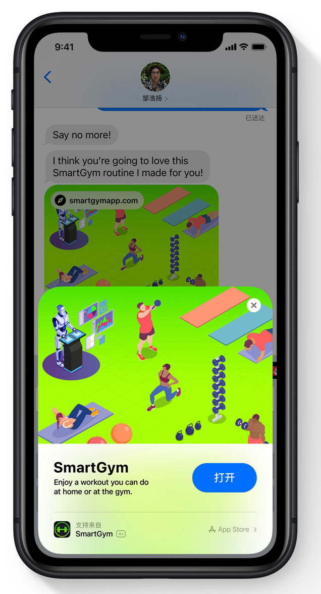
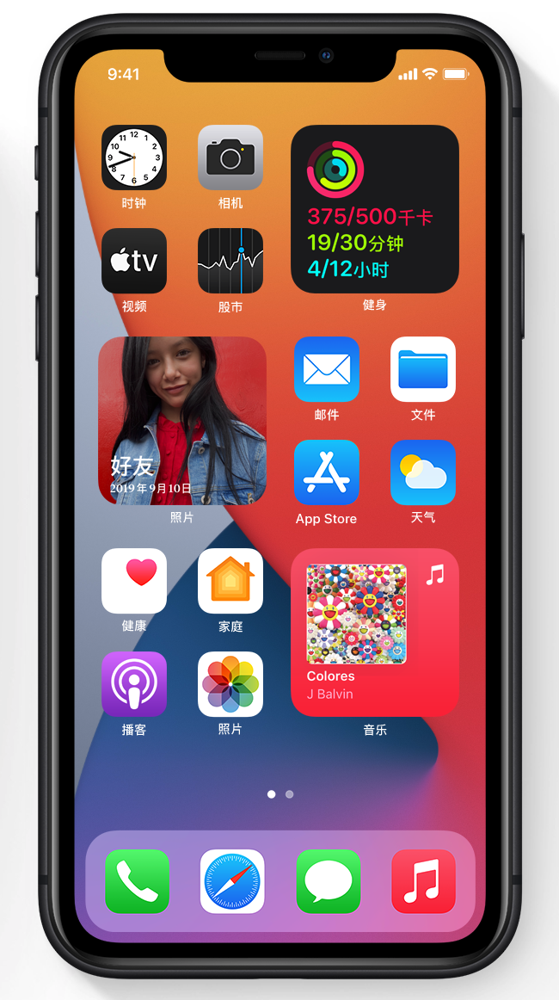
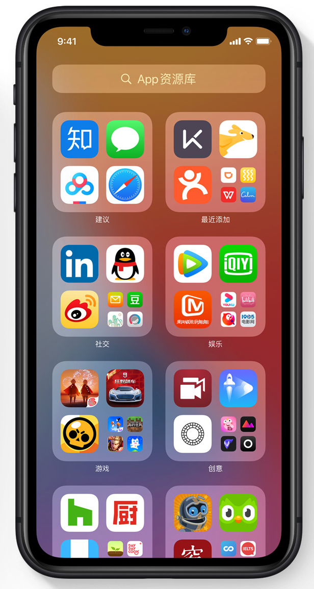

小组件 |
重新设计的小组件 小组件经过重新设计，外观更精美、内容更丰富，可在一天中为你提供更多实用功能。 |
不同视图尺寸的小组件 小组件现有大、中、小三种视图尺寸，让你能够自行选择合适的信息量。 |
| “Siri 建议”小组件 “Siri 建议”小组件会利用设备端智能技术，根据你的使用模式来显示你可能会进行的操作， 如订杯咖啡或开始播放播客。轻点建议即可执行操作，无需启动 app。 |
小组件图库 可将你所有的 Apple 和第三方小组件汇集于一处。图库会根据用户最新安装和最常使用的情况显示热门小组件。 |
|
AirPods |
空间音频 空间音频支持动态头部追踪技术，将影院效果的体验带到了 AirPods Pro 之上6。通过应用定向音频滤波器，以及对双耳接收的频率进 行细微调整，空间音频可将声音虚拟置于空间内的任何方位，提供身临其境般的环绕声体验。 |
耳机调节 这项新的辅助功能经过特别设计，可放大微弱的声音，并针对个人听力调整某些频率，以便让音乐、电影、通话和播客听起来更加明晰清楚7。 耳机调节功能还支持 AirPods Pro 上的通透模式，让轻微的声音更容易听见，并可根据你的听力需求调整环境的声音。 |
| “Siri 建议”小组件 “Siri 建议”小组件会利用设备端智能技术，根据你的使用模式来显示你可能会进行的操作， 如订杯咖啡或开始播放播客。轻点建议即可执行操作，无需启动 app。 |
电量提示 电量提示功能可让你了解是否需要为 AirPods 充电。 |
|
新亮点 |
电话来电 你接到的来电会以横幅形式显示，而不会占据整个屏幕，这样就不会打断你当前的操作。 向上轻扫横幅即可拒接来电，向下轻扫则可展开更多电话功能，然后轻点来接听。 |
FaceTime 通话来电 FaceTime 通话的来电将以横幅形式呈现，而不会占据整个屏幕。向上轻扫横幅即可将其关闭， 向下轻扫则可展开更多 FaceTime 通话功能。 |
| 精简的 Siri 界面 Siri 采用焕然一新的精简界面设计，让你能看着屏幕上的信息，顺畅地开始下一项任务。当你发出一项请求指令时， Siri 会从屏幕底部弹出。在 Siri 做出回答时，它会像通知一样显示在屏幕顶部。在精简的新布局中，Siri 提供的回答经过了更新，现在只会显示你需要的信息。 |
||
|  |  |  |
| 手机型号 | 固件版本 | |
| 下载 |